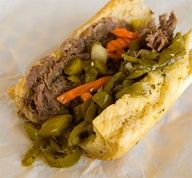

Italian Beef Sandwich

Ingredients
- 5 lb. Bottom Round Roast
- 2 tbsp. Olive Oil
- 1.5 tbsp. Coarse Sea Salt
- 2 tbsp. Avocado Oil
Au Jus Ingredients
- 8 cups Beef Stock
- 4 cloves Fresh Garlic roughly chopped
- 4 tbsp Butter melted
- 1 tbsp Celery Salt
- 1 tbsp Black Pepper
- 1 tbsp Red Pepper Flakes
- 1 tbsp Garlic Powder
- 2 tsp Coriander
- 2 tbsp Fennel
- 2 tbsp Smoky Paprika
- 2 tbsp Basil
- 2 tbsp Oregano
- 2 tbsp Thyme
- 1 tbsp Rosemary
- 3 Whole Bay Leaves (leave seperate from blend)
Sandwich Ingredients
- 12 Italian French Bread Rolls
- 1 jar Hot Giardiniera
- 1 batch Chicago Style Sweet Peppers
Meat Preparation (Dry Brine)
- This should be done 1-2 days in advance of roasting the beef in the oven to allow the salt to fully penetrate the beef. Begin by removing the beef roast from the packaging and pat it dry with paper towels.
- Remove the large pieces of exposed fat and any silver skin. Add the olive oil and coarse sea salt to all sides of the roast.
- Place the roast over a wire rack and then onto a baking sheet. Place the roast uncovered and into the fridge for 24-48 hours to dry brine.
Cooking The Italian Beef
- Preheat the oven to 325 F. Place the rack of the oven just below the center.
- In a bowl, combine all of the spices (except the bay leaves) and mix together until fully combined.
- Preheat a large heavy bottom pan on medium-high heat. Add the avocado oil (or other high smoke point oil) to the pan. Sear the roast on all sides so it browns. It will take a few minutes per side, flip with tongs when it naturally releases from the pan. Once seared, remove the beef roast from the pan and set it aside. Turn the heat off but leave the pan on the burner.
- Wipe out any large amount of excess oil in the pan. Then add in the butter (leave the heat off so it doesn't burn). The butter will sizzle and melt fast from the residual heat.
- To the melted butter, add all of the spices (except the bay leaves) to the butter and whisk to combine. Allow the spices to develop the aromatics for 1-2 minutes.
- Turn the heat back on to medium low. Add the fresh, roughly chopped garlic and allow it to cook in the spicy butter mixture for 1-2 minutes.
- Take the large seared roast and place it back into the pan. Turn the roast over into the spiced butter so it coats the meat.
- Pour in the stock. It's ok if it doesn't completely cover the meat that is ok. Bring the stock mixture up to a simmer then remove the pan from the heat.
- Carefully transfer the pan to the preheated oven. Roast the meat uncovered until the internal temperature reads 195 F. The meat should be tender enough that any connective tissue and collagen breaks down but the meat should not be shreddable.
- Remove the beef and the au jus from the oven and let it cool 40-60 minutes. Transfer the entire mixture as is right into the fridge to cool overnight. The meat must completely chill to 40 F. to make it easy for slicing
How To Make Chicago Italian Beef Sandwiches
- Remove the chilled beef roast and au jus from the fridge. There will be fat that has separated and cooled at the top, do not remove this (it adds flavor). Remove the beef roast and place it on a cutting board and place the au jus in the pan back onto the stove and heat over medium heat so it simmers.
- Slice the meat as thin as possible (this is key). Use a standard deli meat slicer or get ready to use your knife skills to create thin, shaved pieces of meat. Slice against the grain until you have sliced up the entire roast. This takes a lot of time by hand with a knife, so prepare yourself.
- Place small handfuls of the thinly sliced beef into the au jus and cook on medium low in the the broth mixture for about 10 minutes to heat and flavor the beef.
- Slice a French roll (turano rolls recommended) and pile on the shredded beef and ladle over extra au jus. Some Chicagoans prefer their sandwich dunked into the au jus (so you have that as an option).
- Top the Italian beef sandwich off with some spicy giardiniera (you can also try making sweet peppers but the giardiniera is the most common way to eat this sandwich).
Thanks to this website for the recipe!